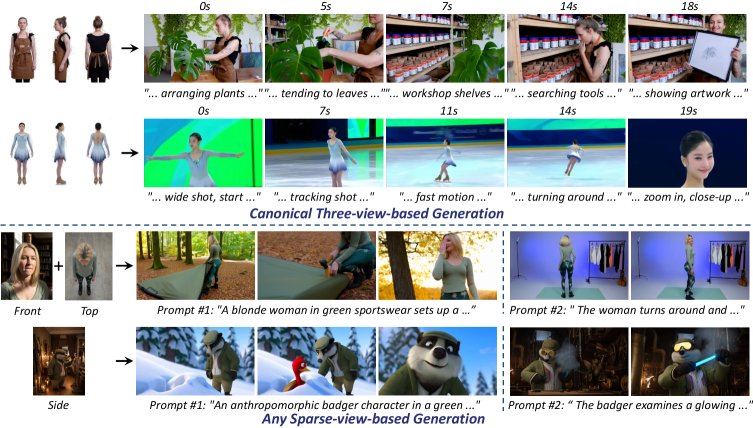
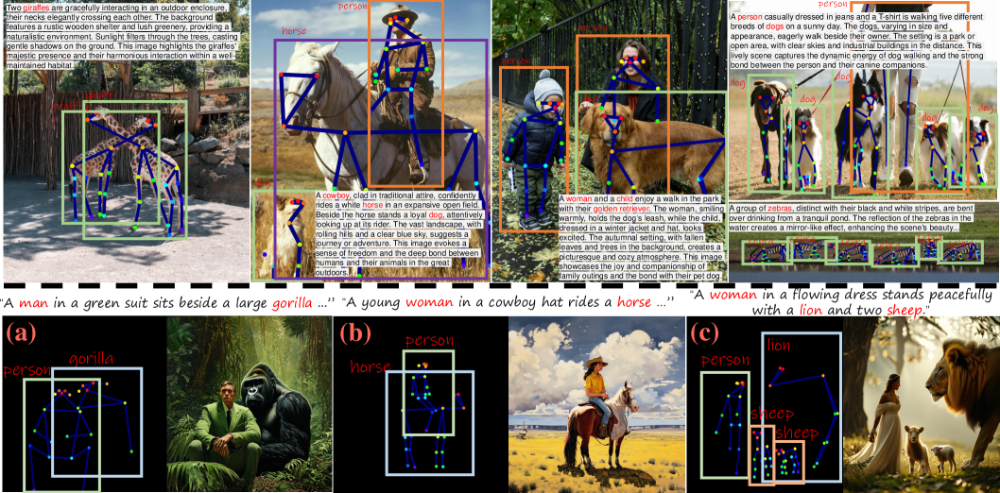
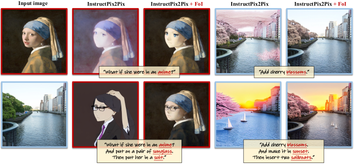

WildActor: Unconstrained Identity-Preserving Video Generation
ICML 2026
Unconstrained video generation with identity preservation for wild actor settings.
I am a Ph.D. student in Computer Science at The Hong Kong University of Science and Technology, advised by Prof. Dan Xu. My research interests include image and video generation and editing, and interactive world models.
Before joining HKUST, I received my M.S. from Peking University, advised by Prof. Yuesheng Zhu, and my B.Eng. from Xidian University.

ICML 2026
Unconstrained video generation with identity preservation for wild actor settings.

ICML 2025
A unified diffusion transformer framework for keypoint-guided multi-class image generation.

CVPR 2024
Fine-grained and multi-instruction image editing by modulating attention according to user instructions.
IMAGGarment+: Efficient Attribute-Wise Diffusion for Garment Generation. Jian Yu, Fei Shen, Cong Wang, Yanpeng Sun, Hao Tang, Qin Guo, Xiaoyu Du. AAAI 2026 Oral.
ChatFace: Chat-Guided Real Face Editing via Diffusion Latent Space Manipulation. Dongxu Yue, Qin Guo, Munan Ning, Jiaxi Cui, Yuesheng Zhu, Li Yuan. arXiv 2023.
AddMe: Zero-shot Group-photo Synthesis by Inserting People into Scenes. Dongxu Yue, Maomao Li, Yunfei Liu, Ailing Zeng, Tianyu Yang, Qin Guo, Yu Li. ECCV 2024.
Long-Term Talking Face Generation via Motion-Prior Conditional Diffusion Model. Fei Shen, Cong Wang, Junyao Gao, Qin Guo, Jisheng Dang, Jinhui Tang, Tat-Seng Chua. ICML 2025.
2025 - Present Ph.D. student in Computer Science, The Hong Kong University of Science and Technology. Advisor: Prof. Dan Xu.
2022 - 2025 M.S. in Computer Science, Peking University. Advisor: Prof. Yuesheng Zhu.
2018 - 2022 B.Eng. in Information Security, Xidian University.
2025 - 2026 Research Intern, Meituan.
2024 - 2025 Research Intern, Alibaba DAMO Academy.
2024 Research Intern, Pika Labs.
Service Reviewer for ECCV, NeurIPS, CVPR, ICCV, ICML, and ICLR.